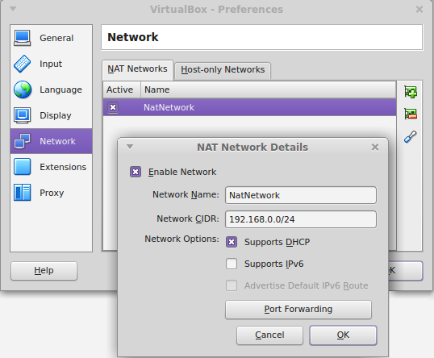
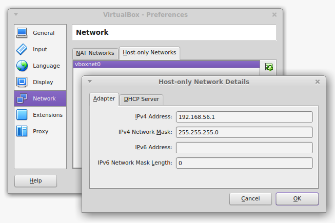
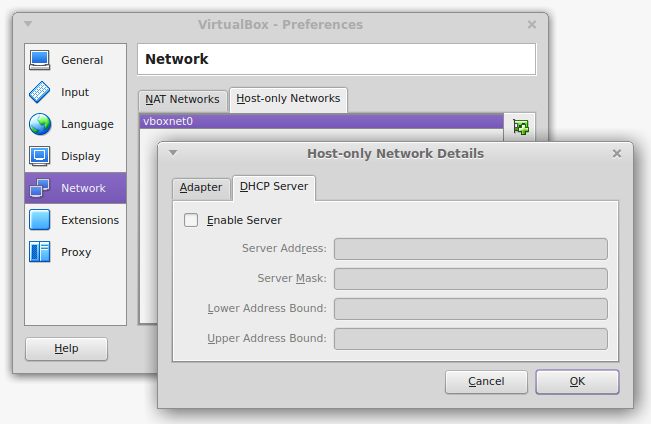
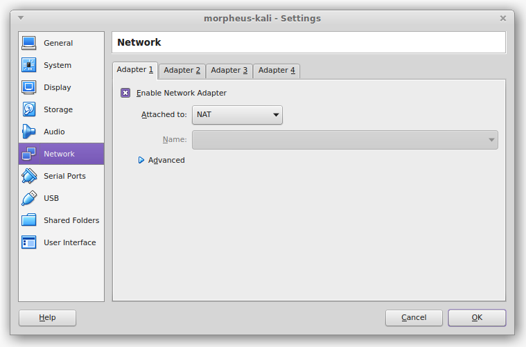
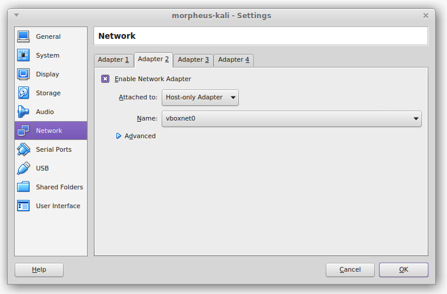

All the software tools I use for penetration and security testing are free, and most of them are open source. I am always diligent in focusing on the free and open source tools, as it makes it easier:
In the words of Offensive Security (Creators of Kali Linux), Kali Linux is an advanced Penetration Testing and Security Auditing Linux distribution. For those that are familiar with BackTrack, basically Kali is a newer creation based on Debian rather than Ubuntu, with significant improvements over BackTrack.
Offensive Security Kali Linux is free and always will be. It is also completely open (as it is based on Debian) to modification of its OS or programmes.
Kali is also FHS compliant in that the file system complies to the Linux File-system Hierarchy Standard.
Wireless device support is vast, including wireless USB devices.
As with BackTrack 5, the Kali ISO also has an option to boot into forensics mode. No drives are written to (including swap) and no drives will be auto mounted upon insertion.
Some of the following recommendations have come from my blog post originally used in a PenTest Magazine article.
When it comes to actually installing Kali on hardware, there are a multitude of options available.
All externally listening services are disabled by default, but very easy to turn on if/when required. The goal is to reduce chances of detecting the presence of Kali.
Kali also provides a simple way to create your own ISO image from the latest source. You can include the packages you want and exclude the ones you don’t, you can also customise the kernel. The options are virtually limitless.
The default desktop environment in Kali 2.0 is Gnome3, but Kali also provides an easy way to configure which desktop environment you use.
The alternative options provided are: KDE, LXDE, XFCE, I3WM and MATE.
Kali has really embraced the Debian ethos of being able to be run on pretty well any hardware with extreme flexibility. This is great to see.
There are more than 300 security programmes packaged with the operating system. Before installation you can view the tools included in the Kali repository, or once installed, by issuing the following command:
To find out a little more about the application:
dpkg-query -l '*<some text you think may exist in the package name>*'
Or if you know the package name you’re after:
dpkg -l [package name]
Want more info still?
man [package name]
Offensive Security (the creators of Kali Linux) provide many options for running their distribution including ISO, turn-key VMware or VirtualBox image, custom ARM images, and Mobile images (NetHunter). I have used the ISO installed on a VM guest for this set-up, as I had a capable host for running this VM side by side with my preferred Windows VM. I did not want the pre-generated SSH host key, which is why I chose the ISO over the turn-key image. Learn more about the dangers of using an install with the pre-generated SSH host key via Nilesh Kapoor’s talk at OWASP NZ Day 2016 on Host Hardening. Slide 12 details how to regenerate the SSH keychain. Note: If you install on physical hardware, you can skip this section and move to the “Tools I Use” section.
The Offensive Security team, which can be found on IRC, are also very helpful and quick to respond to package requests, etc.
You should find most of what you need at kali category installation, just follow the links specific to your requirements.
For this install I created a new VirtualBox VM based on Debian 64.
I created a dynamically allocated 45GB VDI disk with 4GB RAM. More RAM is helpful sometimes, but in most cases I have found 4GB to be enough. You can also increase the size of the disk if you want to, 50GB will give you a little more breathing room, especially if you have additional tools or password lists. With this install, I ended up using a total of 24.2 GB.
The following are just my preferences, you can play with these as you like.
Once the machine is created, I go into the settings and change the location of Snapshots to be stored with the VM, which is running on its own SSD.
Then I change the Shared Clipboard and Drag’n’Drop to Bidirectional.
Change Processors to use as many cores as you can without affecting the rest of your system and any other VMs running on it.
Increase the Video Memory to at least 64MB.
I usually like to add a shared folder so its easier to copy files from host <-> guest. Do not forget to add your user to the vboxsf group that VirtualBox Guest Additions Installer creates below.
Setup network host adapters: this is also discussed in the NodeGoat Set-up on your local machine section in the Process and Practises chapter:
Host-only Adapter allows:
NAT networking allows the VM to talk to the internet via the host’s network interface.
Both Host-only and NAT networking are invisible beyond the host’s network edge.
On your physical host, you can set-up your NAT adapter as follows:
and your Host-only adapter like:
 On your Kali Linux VM, set up your NAT adapter like this:
and your Host-only adapter like:
Then, any time you need to be on the same network segment as the physical host, just switch the Host-only Adapter to Bridged Adapter. You may need to set the interface in the “Name” drop-down box to wlan0 or what ever the primary interface is that your physical host is using to connect to the physical network. You may need to update your /etc/network/interfaces here also to the default that the install provided.
Alternatively, make the switch to Bridged Adapter on Adapter 1. This way you don’t need to change the /etc/network/interfaces at all. In VirtualBox 5.0.4 I couldn’t get an internet connection through any of the VirtualBox adapters, no matter how I configured them. It seems that VirtualBox may be a little buggy in terms of NAT and NAT Network. If you run into this problem, and you decide to set-up the external wireless adapter as discussed in the Additional Hardware section below, you can bypass the VirtualBox adapters all together. This worked for me.
The ISO can be downloaded from kali downloads via torrent and direct download and is a little over 3GB in size.
You will want to check the validity of the ISO (or other image if that is your preference) by verifying the SHA1 checksums. Details are directly under the downloads section and should be enough to get you going.
There are additional details if you want to read them at http://docs.kali.org/introduction/download-official-kali-linux-images, but essentially there are several ways to validate that you have the official Kali Linux installer and not some tampered-with binary. The details at the above link provide a bit more explanation around the validation steps, and importing the Kali GPG public key. At the bottom of the page is the command for cryptographically validating the downloaded binary once you have validated the downloaded SHA1SUMS file with the SHA1SUMS.pgp key that you also downloaded. You will likely just have to change the actual .iso name in the command to that of the .iso you downloaded.
You can refer to the hard-disk install (http://docs.kali.org/installation/kali-linux-hard-disk-install) for running through the OS installer if you need it. For Partitioning disks, I choose “Guided - use entire disk and set up LVM” for future flexibility.
Once installed, run the following, and regularly thereafter. On the first dist-upgrade, this can take hours depending on how many updates there are:
In Kali 2016.1 (Sana) the default user is no longer root. If you’re installing, make sure you use a decent password, not a dictionary word or similar. It is generally a good idea to use a mixture of upper case, lower case characters, numbers and special characters, and of a decent length. You will get the option to set your password and create a root user, or just use sudo during the install. If you want to change the password later, at the terminal, enter: passwd and follow the prompts. Many of the commands used in this book will require root privileges. Prefixing with sudo will elevate your privileges to those of root.
I usually set-up the /etc/network/interfaces file here for the host-only adapter, we will need this working for the Process and Practises chapter at a minimum, again this is partly discussed in the NodeGoat Set-up on your local machine section in the Process and Practises chapter. Backup your /etc/network/interfaces before making changes, and add the following to the bottom of the interfaces:
Once the VirtualBox Guest Additions Installer has run and added the vboxsf group, you will need to add your user to that:
I prefer the Mate desktop environment over the default. To set this up, run the following:
Then, at the login screen, just click the gear icon and change to Mate.
The Metasploit Community / Pro package is no longer shipping in Kali. Instead, the metasploit-framework package is available. If you need the Community or Pro edition, you will have to register your personal details with Rapid7 in order to be supplied with a license. There are more details at the kali.org site.
ss -ant
service postgresql startss -antservice postgresql status msfdb initmsf and msf_test, and create a configuration file in/usr/share/metasploit-framework/config/database.yml msfconsolemsfconsole -r <your custom resource>.rcservice metasploit startmetasploit service as such.msf > help
msf > show
all, encoders, nops, exploits, payloads, auxiliary, plugins, options missing, advanced, evasion, targets, actions msf > show optionsmsf > info <module name> info
Check-out the recommended configuration.
Modify the following two files as required:
/etc/beef-xss/config.yaml/usr/share/beef-xss/extensions/metasploit/config.yamlIf you need Metasploit integration in BeEF (in most cases you will want this), set:
extension: metasploit: enable: true
in the /etc/beef-xss/config.yaml file.
Also make sure
enable
is set to true in /usr/share/beef-xss/extensions/metasploit/config.yaml
When running Metasploit for BeEF, I often provide msfconsole with a Metasploit resource file specifically for BeEF (I call this beef.rc and put it in ~/). This resource file will have the following in it at a minimum:
load msgrpc ServerHost=127.0.0.1 Pass=abc123
Start postgresql, then metasploit like:
msfconsole -r beef.rc
If not using the resource file, once msfconsole is running, in order to enable RPC communication for BeEF, I enter:
load msgrpc ServerHost=127.0.0.1 Pass=abc123
Finally… starting BeEF. There are at least three ways to do so. I find that the first is the most informative and interactive. Also, do not forget to run beef as root.
/usr/share/beef-xss/ directory./beefconfig.yaml/etc/beef-xss/config.yaml) contains:extension: console: shell: enable: trueservice beef-xss startIf you run Burp and it tells you that “A new version of Burp is available.”, follow these directions:
.jar file) from https://portswigger.net/burp/download.html
~/Downloads
mv burpsuite_[version].jar /usr/bin/usr/bin
mv burpsuite burpsuite-oldmv burpsuite_[version].jar burpsuitechmod 755 burpsuitechown root:root burpsuiteI now take a backup in case I need to revert. With VirtualBox it is very easy to take a snap-shot that can be reverted to at any time. Snap-shots are excellent for returning to a known state between penetration tests. Testing is not really testing at all unless you can reproduce the same results during each test. Starting from a known state is essential for this.
As I spend most of my life in terminals, I want a good one. I have found that Terminator does everything I need from a terminal. Briefly discussed on my blog. If you also like a decent terminal experience, then:
apt-get install terminator
These are a set of shell scripts tied together in a CUI to aggregate Kali Linux information gathering tools and automate various penetration testing tasks. Both passive and active options allow you to dig up a lot of dirt on your target, long before you start trying to penetrate them. So, rather than getting familiar with all the reconnaissance tools, you can just become familiar with Discover Scripts.
git clone https://github.com/leebaird/discover.git /opt/discover/cd /opt/discover/ && ./update.shSmbExec connects to the Windows Domain Controller and, using the Windows Shadow Copy (AKA Volume Snapshot Service (VSS)), grabs the ntds.dit file, which is the heart of Active Directory, including user accounts.
The set-up process looks like this in Kali 2016.1
git clone https://github.com/pentestgeek/smbexec.git /opt/smbexeccd /opt/smbexec && ./install.sh/optGitrob is an OSINT reconnaissance tool for obtaining information from your target’s github account(s), or more.
git clone https://github.com/michenriksen/gitrob.git /opt/gitrobgem install bundlerapt-get install libpq-devservice postgresql startsu postgrescreateuser -s gitrob --pwprompt # Do not use a password with @ in itcreatedb -O gitrob gitrobexitcd /opt/gitrob/bingem install gitrobYou’ll need to acquire a github API token, because gitrob derives its OSINT from the github API
Now, you configure gitrob with the information we have just discussed. Running the following will prompt you for the details:
gitrob configure
This will write to ~/.gitrobrc
To run:
gitrob [repo1, repo2, etc] [usernames, ...]
or see the documentation for more details
CMSmap is a python open source CMS scanner that automates the process of detecting security flaws of the most popular Content Management Systems (CMSs).
Currently supports: WordPress, Joomla and Drupal.
git clone https://github.com/Dionach/CMSmap.git /opt/CMSmap
I have decided to clone the Veil-Framework, as it has a good collection of very useful tools. Veil-Evasion is specifically useful for antimalware evasion. The Veil super project also has an install script to install all Veil projects, found at the Veil repository for the Veil-Framework account on github.
There are install guides here:
https://www.veil-framework.com/guidesvideos/
To install:
To run Veil-Evasion:
cd /opt/Veil/Veil-Evasion/ && ./Veil-Evasion.py
mkdir ~/Desktop/password_listThere are many other good lists out there. Also if you:
locate wordlists
on your Kali Linux install, you will find many already exist in Kali Linux.
Cupp is an easy to use password profiling tool.
git clone https://github.com/Mebus/cupp.git /opt/cupp
This tool is useful for taking screen shots and HTML of a large number of websites concurrently.
It can also use Masscan under the covers.
pip install seleniumgit clone https://github.com/breenmachine/httpscreenshot.git /opt/httpscreenshot/opt/rawr/data/phantomjs/bin/phantomjs, so we need to create a symlink:ln -s /opt/rawr/data/phantomjs/bin/phantomjs /usr/bin/phantomjs
apt-get install swig libssl-dev python-dev python-pipcd /opt/httpscreenshot && pip install -r requirements.txtmasshttp.sh, edit the /opt/httpscreenshot/masshttp.sh
whereis masscan will reveal its location. By default it will be in /usr/bin/masscan
~/tools/httpscreenshot.py to /opt/httpscreenshot/httpscreenshot.py
8080,8001 etccd /opt/httpscreenshot && ./masshttp.shhttpscreenshot.py by itself, the simplest way:
cd /opt/httpscreenshot && vim inputURLs./httpscreenshot.py -l inputURLs -p -w 5 -a -vH
Useful for PowerShell and other attacks. Generates PowerShell and other payloads useful for evading anti-virus (AV) detection. Also provides the Metasploit resource files.
git clone https://github.com/nixawk/psmsf.git /opt/psmsf
This is a LLMNR, NBT-NS and MDNS poisoner. It has built in authentication servers for SMB (Supports NTLMv1, NTLMv2 hashes with Extended Security NTLMSSP), MSSQL, HTTP(s), LDAP, FTP, POP3, IMAP, SMTP as well as a built-in DNS server.
git clone https://github.com/SpiderLabs/Responder.git /opt/Responder
A collection of scripts produced by Peter Kim:
git clone https://github.com/cheetz/Easy-P.git /opt/Easy-Pgit clone https://github.com/cheetz/Password_Plus_One /opt/Password_Plus_Onegit clone https://github.com/cheetz/PowerShell_Popup /opt/PowerShell_Popupgit clone https://github.com/cheetz/icmpshock /opt/icmpshockgit clone https://github.com/cheetz/brutescrape /opt/brutescrapegit clone https://github.com/cheetz/reddit_xss /opt/reddit_xssBypassUAC is used to bypass User Access Controls, post-exploitation, allowing us to get system privileges. I used this in the demo attack I describe in the Website section, under Spoofing, in the Risks section of the Network chapter of Fascicle 1. There is, in fact, a way to do this that is less likely to trigger an AV alert. I cover this under the below set of directions.
In Kali 1.1
cd /opt/wget http://www.secmaniac.com/files/bypassuac.zipunzip bypassuac.zipcp bypassuac/bypassuac.rb /opt/metasploit/apps/pro/msf3/scripts/meterpreter/mv bypassuac/uac/ /opt/metasploit/apps/pro/msf3/data/exploits/Use of the above script typically leads to an executable that is dropped on the target machine, which also spawns a second file. Often, AV will trigger from one of these two files. A better way, and the way I now use, is to use the bypassuac_injection module instead.
In Kali 2016.1 rolling, executing the demo attack mentioned above may appear as follows:
NoSQLMap is designed to audit and automate injection attacks, and exploit default configuration weaknesses in NoSQL databases, as well as web applications using NoSQL.
git clone https://github.com/tcstool/NoSQLMap.git /opt/NoSQLMap
Spiderfoor is an automated OSINT gathering tool.
pip install lxml netaddr M2Crypto cherrypy makogit clone https://github.com/smicallef/spiderfoot /opt/spiderfootcd /opt/spiderfoot && ./sf.pyThese are a collection of many different lists used during security assessments, which include user-names, passwords, URLs, sensitive data patterns, fuzzing payloads, web shells, and many more. Their goal is to enable a security tester to pull this repository onto a new testing system and have access to every type of list that may be needed.
git clone http://github.com/danielmiessler/SecLists.git /opt/SecLists
Sniff passwords and hashes from a network interface or pcap file with Net-creds.
git clone https://github.com/DanMcInerney/net-creds.git /opt/net-creds
The old 1.x shell script is shipped with Kali Linux (now the 1_x branch), but the newer branch “master” is more thorough, the code is cleaner, although still considered somewhat experimental. The master branch also has a lot more files.
The old 1.x shell script for obvious reasons may be more portable for you. It also runs faster, because it does less. unix-privesc-check can be cloned from github.
The home page is: http://pentestmonkey.net/tools/audit/unix-privesc-check
git clone https://github.com/pentestmonkey/unix-privesc-check.git /opt/unix-privesc-check
Another excellent shell script for performing host reconnaissance when you are on the host and looking to escalate your privilages. You need to get this script onto your targets box and just run it. You can find the required details on the README.md at the github.
git clone https://github.com/rebootuser/LinEnum.git /opt/LinEnum
sudo apt-get install chromium
As a web developer I use the chromium dev tools more frequently than FireFox dev tools, although both have their strengths.
In Kali Linux 1.1:
In order to run this under the root account, you will need to add the following parameter to /etc/chromium/default between the quotes for CHROMIUM_FLAGS=""
--user-data-dir
In Kali 2016.1 rolling:
We no longer must run everything as root, so this is no longer an issue.
FoxyProxy provides a menu button, so with two clicks you can disable the add-on completely to revert to your previous settings, or select any of your predefined proxies. This is a real time saver.
Once you add it to your browser, open it up, and add a new proxy. We will use this one for Burpsuite later.
Proxy Name: Burp 8080 # or what ever you like.
Host or IP Address: 127.0.0.1
Port: 8080
A small introduction to Iceweasel: Iceweasel was forked from Firefox for the purpose of back-porting security fixes to Debian stable, and not including the trademarked Mozilla artwork.
It is often very helpful to have at least a couple of Wi-Fi adapters when performing wireless reconnaissance or attacks, or simply to maintain internet connectivity if using your phone as a wireless hot-spot while you are on another network. It is also useful for researching while your connected to a target’s wireless Access Point (AP). An easy way to do this is to use the laptop’s on-board wireless interface to connect to the phone’s wireless hot-spot, and pass the USB Wi-Fi adapter straight to the guest.
There are many devices of varying specifications. I have found (along with others) that the TL-WN722N hits a good sweet spot of cross platform compatibility, price, size, ease of purchase, and a few other considerations.
As I find it flexible to run pen testing set-ups on VMs, the following addresses such configurations. Using VirtualBox 5.0.4, USB devices have to be “passed through” to the guest. The following process explains what is involved.
The following is the process I have found to set-up the pass-through on Kali 2016.1 (first Kali rolling release. Kernel 4.3, Gnome 3.18), by-passing the Linux Mint 17.3 (Rosa) Host (in my case).
TP-LINK TL-WN722N Version 1.10
iwconfigifconfigsudo lshw -C networkiwlist scanlsusbdmesg | grep -e wlan -e ath9/var/log/syslog
lsmoddhclient -r [interface-name]`dhclient [interface-name]
When you plug the Wi-Fi adapter into your laptop and run lsusb, you should see a line that looks like:
ID 0cf3:9271 Atheros Communications, Inc. AR9271 802.11n
The first four hex digits are the Vendor ID, the second four hex digits are the Product ID.
If you have a look from the bottom up of the /var/log/syslog file, you will see similar output to the following:
[ 98.212097] usb 2-2: USB disconnect, device number 3
kernel: [ 102.654780] usb 1-1: new high-speed USB device number 2 using ehci_hcd
kernel: [ 103.279004] usb 1-1: New USB device found, idVendor=0cf3, idProduct=7015
kernel: [ 103.279014] usb 1-1: New USB device strings: Mfr=16, Product=32, SerialNumber=48
kernel: [ 103.279020] usb 1-1: Product: UB95
kernel: [ 103.279025] usb 1-1: Manufacturer: ATHEROS
kernel: [ 103.279030] usb 1-1: SerialNumber: 12345
kernel: [ 103.597849] usb 1-1: ath9k_htc: Transferred FW: htc_7010.fw, size: 72992
kernel: [ 104.596310] ath9k_htc 1-1:1.0: ath9k_htc: Target is unresponsive
kernel: [ 104.596328] Failed to initialize the device
kernel: [ 104.605694] ath9k_htc: probe of 1-1:1.0 failed with error -22
First of all, you need to add the user that controls the guest to the vboxusers group on the host, so that VMs can control USB devices. Be sure to logout of the host, then log back in.
Install the appropriate VirtualBox Extension Pack on to the host. These packs can be found here (https://www.virtualbox.org/wiki/Downloads) for the most recent,
and older builds here: (https://www.virtualbox.org/wiki/Download_Old_Builds_5_0). Do not forget to checksum the pack before you add the extension. The version of the extension pack must match that of the VirtualBox installed. Now in your guest, check to see if you have the appropriate linux-headers package installed. If you do not, run the following:
apt-get updateapt-get upgradeapt-get dist-upgradeapt-get install linux-headers-$(uname -r)Unload the ath9k_htc module to take effect immediately, and blacklist it so that it does not load on boot. The module needs to be blacklisted on the host in order for the guest to be able to load it. Now we need to check to see if the module is currently loaded on the host with the following command:
lsmod | grep -e ath
We are looking for ath9k_htc. If it is visible in the output produced from the previous command, unload it with the following command:
modprobe -r ath9k_htc
Next you will need to create a blacklist file in /etc/modprobe.d/
Create /etc/modprobe.d/blacklist-ath9k.conf and add the following text into it and save:
blacklist ath9k_htc
I had to do the following step on Kali 1.1, but it seems it is no longer necessary in Kali 2016.1 rolling. If you are still on 1.1, go into the settings of your VM -> USB -> and add a Device Filter. I named this tl-wn722n and added the Vendor and Product IDs we discovered with lsusb. Make sure Enable USB 2.0 (EHCI) Controller is also enabled.
Plug your Wi-Fi adapter into your laptop.
In the Devices menu of your guest -> USB Devices, you should be able to select the ATHEROS USB2.0 WLAN adapter.
Run dmesg | grep htc, you should see something similar to the following printed:
[ 4.648701] usb 2-1: ath9k_htc: Firmware htc_9271.fw requested
[ 4.648805] usbcore: registered new interface driver ath9k_htc
[ 4.649951] usb 2-1: firmware: direct-loading firmware htc_9271.fw
[ 4.966479] usb 2-1: ath9k_htc: Transferred FW: htc_9271.fw, size: 50980
[ 5.217395] ath9k_htc 2-1:1.0: ath9k_htc: HTC initialized with 33 credits
[ 5.860808] ath9k_htc 2-1:1.0: ath9k_htc: FW Version: 1.3
You should now be able to select the phone’s wireless hot-spot you want to connect to in network manager.
We will be exploiting Windows machines and networks in Fascicle 1, so for that, you will need a Windows 7, optional Windows 10, and any other Windows Operating Systems you can get set-up to help you hone your knowledge of the systems, how to defend and attack them. Most of the tools I have used have been installed / set-up on a Windows 7 VM. This way we can use the VM for both offence and exploitation. Then just restore to a previous snapshot after each test.
I now take a backup in case I need to revert. With VirtualBox it is very easy to take a snap-shot that can be reverted to at any time. Snap-shots are excellent for returning to a known state between penetration tests. Testing is not really testing at all unless you can reproduce the same results during each test. Starting from a known state is essential for this.
I tried installing this in July of 2015 and ran into troubles (detailed under the Hyperion section), looks like they have applied a fix now though. The following worked for me:
C:\MinGW\bin to my System PathIn July of 2015, this was my process:
I started following these directions: http://e-spohn.com/blog/2012/08/02/pe-crypters-hyperion/.
Kali does not have g++ in /root/.wine/drive_c/MinGW/bin/ but I did not see any point in installing it into wine as it would still have the same issues it had on windows.
I followed the directions on setting up the MinGW compiler to compile hyperion, this did not work, I kept getting errors.
I made a fix on one of the files (http://www.gaia-gis.it/spatialite-2.4.0-3/mingw_how_to.html#libgeos), but kept getting more errors, and just ended up copying the Hyperion-1.2 from http://nullsecurity.net/tools/binary.html to the Windows 7 desktop.
I installed MinGW from http://sourceforge.net/projects/mingw/, but did not end up using it as it had to many errors.
It was missing a file libgcc_s_dw2-1.dll from C:\MinGW\bin\ so I got this from the archive here: http://sourceforge.net/projects/mingw/files/MinGW/Base/gcc/Version4/Previous%20
Release%20gcc-4.4.0/ as discussed here: http://stackoverflow.com/questions/14502080/missing-libgcc-s-dw2-1-dll-error-when-launching-mingw-compiled-exe. Then after reading this: http:
//mingw-users.1079350.n2.nabble.com/Question-libgmp-10-dll-not-found-td7443661.html realised that to get hyperion to run, I would be best to copy libgcc_s_dw2-1.dll and libstdc++-6.dll from C:\MinGW\bin to C:\Users\testaccount\Desktop\Hyperion-1.2
Now in 2017 MinGW is installing and running without problem, it should be a simple case of just downloading, checking the MD5 sum, although it is not over HTTPS, Join their IRC channel to confirm the MD5 sum, extract and run make and you should have the binary.
Useful for creating PowerShell payloads with embedded Metasploit payloads via msfvenom.
git clone https://github.com/nixawk/psmsf.git /opt/psmsf
These are also a collection of PowerShell scripts useful for exploitation and post-exploitation.
git clone https://github.com/samratashok/nishang.git C:/Source/nishang
PowerSploit includes PowerShell scripts for all phases of an assessment.
git clone https://github.com/PowerShellMafia/PowerSploit/.git C:/Source/PowerSploit